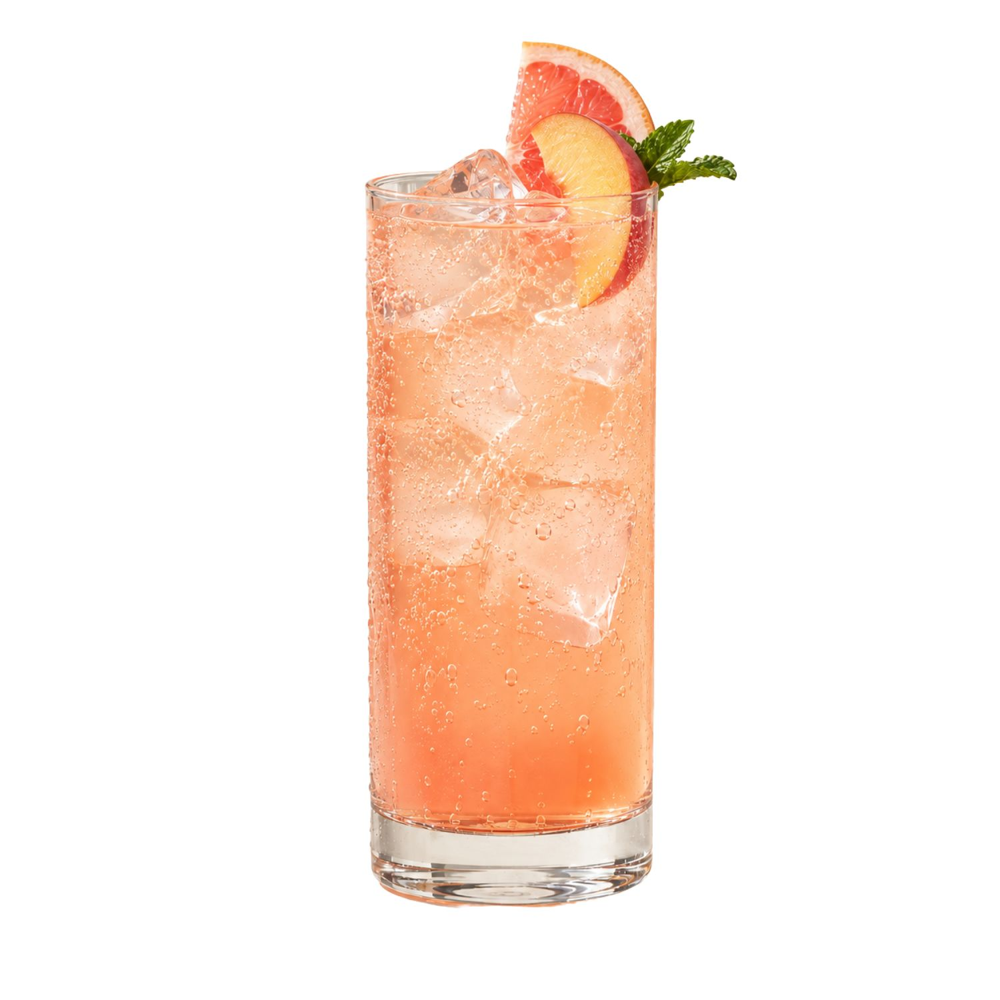
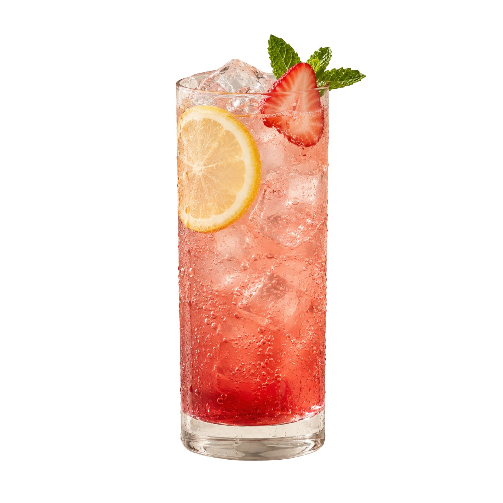
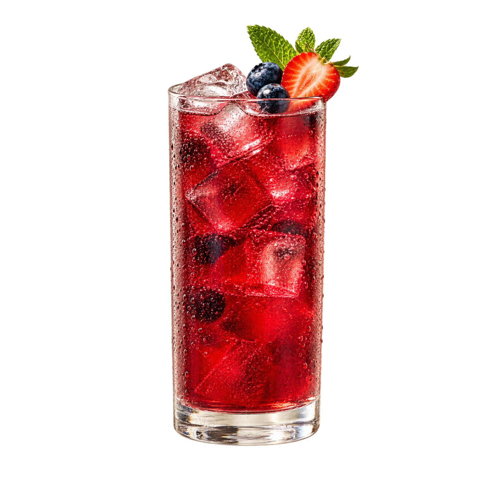

| ||||||||
升级现有菜单 真正一键出杯的 | ||||||||

1. 真正的一键出杯 无需手动添加果酱、小料或鲜奶。 |
2. 无需泡茶 省去日常泡茶准备，让备料更加方便快捷。 |
3. 每周清洗 1 次 降低设备清洗维护频次，减少日常维护工作。 |
4. 增加饮品销售机会 以亮眼、易点单的果味饮品丰富菜单选择。 |
5. 免费市场推广物料 确认新菜单后，同步提供数字版与可印刷物料。 | |
EXPRESS EDITION
新菜单与现有菜单的关键差别
更少手动操作与维护步骤，让日常出杯更高效。
|
| ||
|
|
| 无需泡茶，备料更简单快捷 省去日常泡茶准备，让员工更快进入出杯流程。 |
完整菜单
11 款 Refreshers 与 Lemonades
无茶底、无咖啡因；点击菜单图片可查看大图。

OPTIONAL SOJU COLLECTION
可选扩展：6 款 Soju 酒饮
持有 Beer and Wine License 的餐厅，可在新菜单基础上选择增加 Soju 酒饮，为顾客提供更多选择。
Mango Passionfruit Soju |  Tropical Soju |  Peach Citrus Soju |
 Strawberry Soju Lemonade |  Double Berry Soju | Soju Lemonade |
FREE MARKETING MATERIALS
免费推广物料，助力新品销售
您可根据当地市场为每款饮品自主定价。确认新菜单后，SiPod 将免费提供匹配的数字版与可印刷推广物料，帮助门店清晰展示新品、促进顾客点单。
POLICY UPDATE
300 杯保护政策将于 11 月 24 日结束
11 月 24 日起，SiPod 将取消 300 杯保护，并在下一个收费周期恢复正常月费扣款。如需停止服务，请联系我们。
电话：888-606-6888
邮箱：bd@sipod.com
| 查看最新政策 |
如有疑问，请联系 SiPod：888-606-6888 或 bd@sipod.com
SiPod Group Inc. · 17 Allen Street, New York, NY 10002